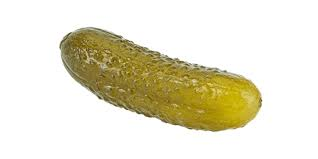

PICKLESSS

Description: Pickle all sorts with vinegar, including cucumbers!
- pickle cucumbers
- salt
- water
- clean jar
- herbs
- Wash pickle cucumbers thoroughly
- Add 1:1 water to vinegar
- Add salt to solution and reach boil
- Add boiling solution into glass jar and add herbs
Return to Main Page